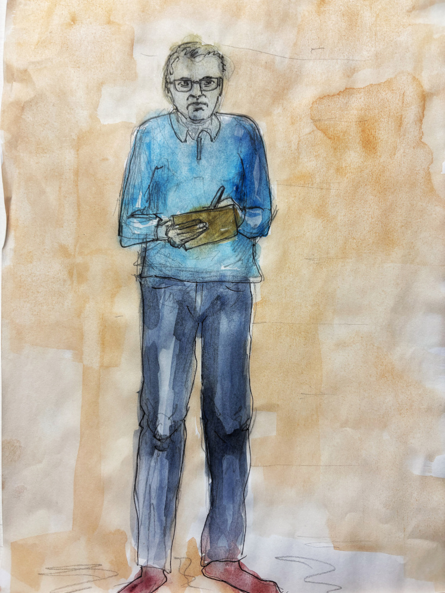
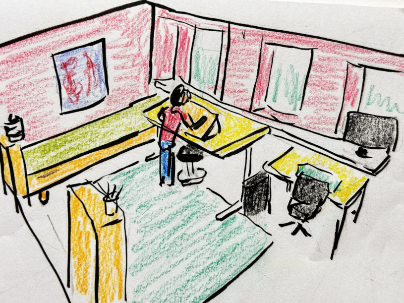

With the New Year just around the corner, this is perhaps a good time for another newsletter.
This autumn, I spent Mondays in an art studio with a small group of people, learning the basics of painting. Some of the results are shared on previous pages. It's interesting to meet and get to know people who are completely different from the ones you meet in the usual "friends & colleagues bubble".
The remaining hours of the week were meant to be evenly distributed across my three chosen focus topics: reading/writing, music, and drawing/painting. To be honest, most of the time, if not all, was spent exploring drawing/painting. This is the topic where I have the least experience and talent. It is so frustrating to see things come out on paper that are not at all what they looked like in my head.
For the first time, I took "Högskoleprovet", the Swedish Scholastic Aptitude Test (SweSAT). The result is used alongside normal grades when applying to university. (When I started my MSc education a long time ago, the SweSAT was not available.) To my surprise I lucked out on the test and can, for the next eight years, basically join any program I want. This was good news since the plan is to attend a class every year for the rest of my life. :) By the way, isn't it mind-blowing that university studies come at no cost? There are literally thousands and thousands of quality-assured courses and programs out there!
The digital-notebook "blogging motion" has not quite developed the way I thought. The reason is that I feel a certain resistance every time I post: a feeling of "why would this interest anyone?". I have to remind myself that I am just documenting a learning journey, not building a portfolio. Also, the content is not automatically served in someones media feed. All visitors actually went the extra mile to arrive at this small and remote planet in the internet universe. Anyway, I will give it some more time to see how it develops. Perhaps I just need to get into the habit.

I look forward to becoming a full-time student next semester. I signed up for Creative Writing and Comics Creation, both are remote courses. I will also continue at the art studio once a week, but for slightly fewer hours than today.
Nowadays, when I am completely in charge of my own agenda, I find it much easier to read and enjoy books. Here are the ones I read since the September newsletter, in no particular order since they are all safe bets:
By the way, do you have any books you'd like to recommend? (No business literature, please 😉)
Thanks for reading, and I wish you all a Merry Christmas and a Happy New Year!
Best regards,
/Jan
Previous newsletters:
Just send me an email if you want to receive these newsletters in the future. (The same if you want to unsubscribe.)